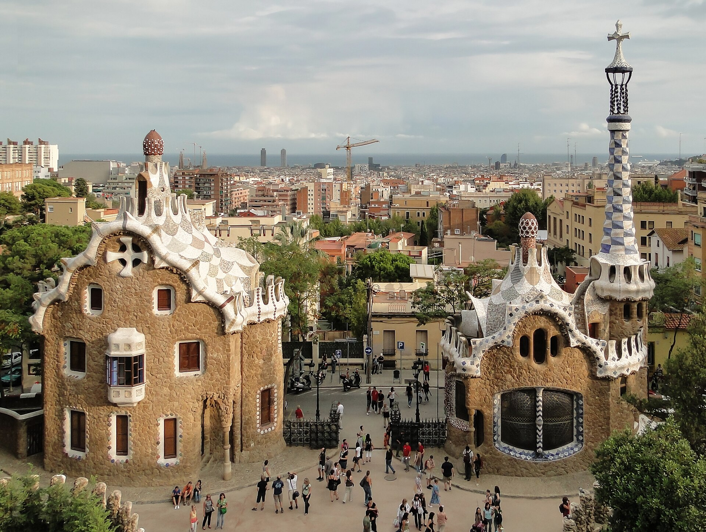

Foto: Bernard Gagnon · CC BY-SA 3.0 · Wikimedia Commons
Park Güell
Durata consigliata: 1,5–2 ore (area monumentale)Nasce come un fallimento immobiliare, ed è la sua fortuna. All'inizio del Novecento l'industriale Eusebi Güell, mecenate e amico di Gaudí, immaginò qui un quartiere residenziale esclusivo per la buona borghesia di Barcellona: sessanta villette su una collina panoramica, immerse nel verde, lontane dal caos della città. Ne furono vendute due. Il progetto naufragò e l'area divenne parco pubblico — ed è così che uno dei sogni urbanistici più folli di Gaudí è finito per appartenere a tutti.
Il cuore è la grande terrazza, orlata da una panchina ondulata che serpeggia per oltre cento metri, rivestita del celebre trencadís: il mosaico fatto di frammenti di ceramica e vetro, scarti recuperati e ricomposti in un caleidoscopio che non si ripete mai uguale. Da lassù lo sguardo corre sulla città fino al mare. Sotto la terrazza si nasconde la Sala Ipostila, una selva di colonne doriche leggermente inclinate, pensata come mercato del quartiere che non fu mai. E all'ingresso, sulla scalinata, vi accoglie el drac, la salamandra di mosaico diventata il simbolo di tutta Barcellona.
Da ascoltare all'ingresso: Quello che stai per vedere doveva essere un quartiere per ricchi, e non lo è diventato mai. Per questo oggi puoi camminarci tu. Cerca la panchina ondulata sulla grande terrazza: è fatta di migliaia di frammenti di ceramica, nessuno uguale all'altro. Siediti un momento e guarda la città sotto di te. Gaudí voleva che da qui si vedesse tutta Barcellona — e ci è riuscito.